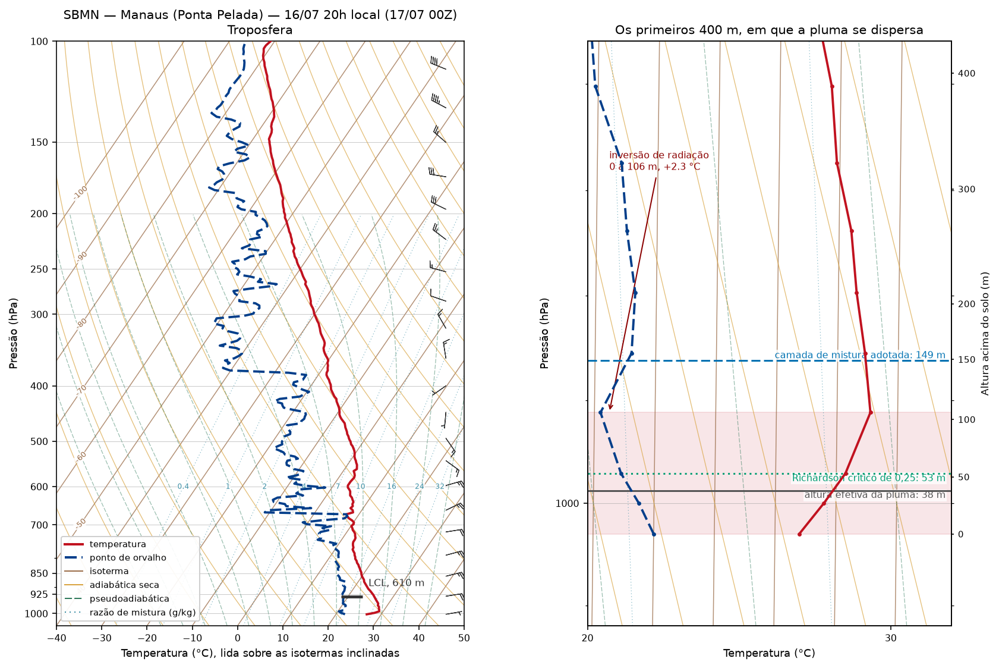
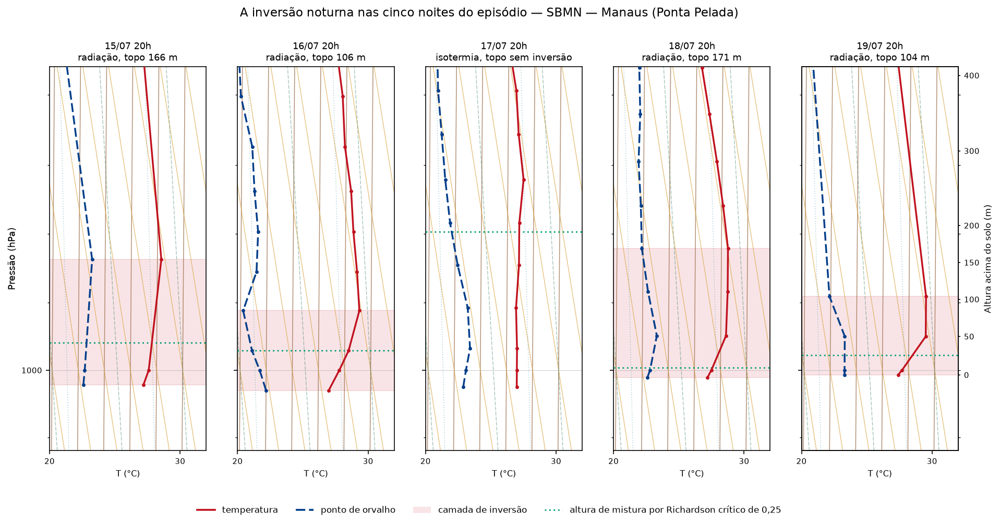
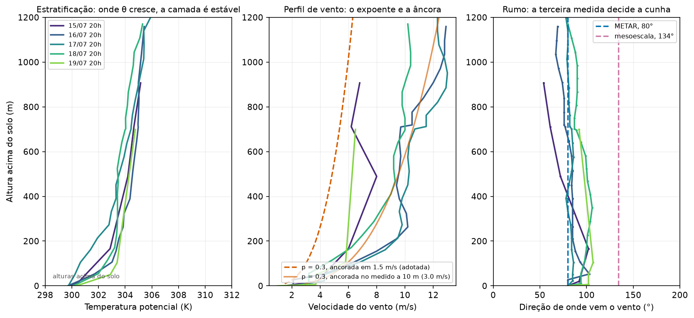
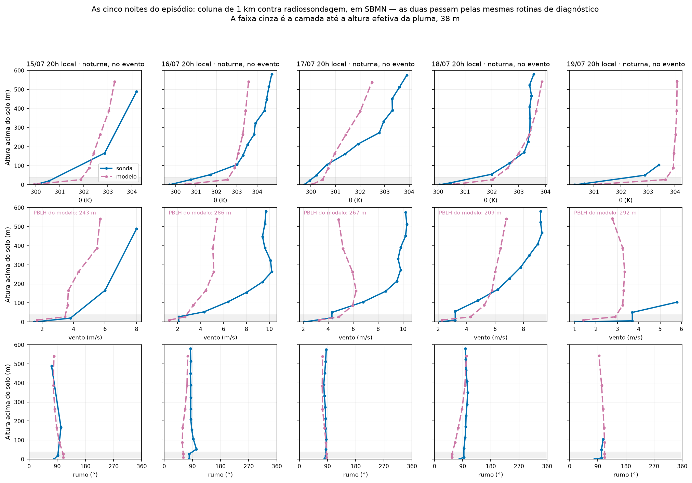

A vertical medida: as radiossondagens do episódio
O que ainda não havia sido medido
Três grandezas do modelo de pluma descrevem a estrutura vertical da atmosfera, e até aqui nenhuma delas vinha de observação. A camada de mistura noturna era uma mediana do campo de mesoescala. O gradiente de temperatura potencial, que governa a ascensão do jato, era um valor tabelado por agência para a classe de estabilidade F. O expoente do perfil de vento era uma constante de literatura. Somava-se a isso a divergência de rumo entre o METAR e o campo simulado, de 54°, que a página de meteorologia identifica como a maior incerteza do campo de concentração e que não podia ser arbitrada com duas medidas em conflito.
Existe uma quarta medida, e ela foi tomada durante o episódio. A estação SBMN (82332), no aeroporto de Ponta Pelada, a 4,4 km da fonte, lança radiossonda duas vezes por dia. Doze lançamentos cobrem 15 a 20 de julho de 2026. Com fuso UTC−4, o horário de 00Z corresponde às 20 h locais, quando a inversão de radiação já se formou, e o de 12Z às 08 h. Cinco lançamentos noturnos caem dentro do vazamento — o de 15/07 00Z é anterior ao início da liberação e fica fora de qualquer média.
Não é a madrugada de 00 h a 06 h que ancora o problema inverso, e sim o seu início. Mas é medida direta da coluna de ar sobre a cidade, no dia certo, com sonda, e é o único contraponto observacional que o episódio deixou para a vertical.
Como se lê a carta
O diagrama Skew-T log-P é a carta termodinâmica padrão para análise de sondagens. A ordenada é o logaritmo da pressão, o que torna a distância vertical proporcional à energia; as isotermas são inclinadas em cerca de 45° para a direita, de onde vem o nome. A geometria não é decorativa: ela faz com que isoterma e adiabática seca se cruzem próximo do ângulo reto, de modo que o afastamento entre a sondagem e a adiabática — que é a definição de estabilidade — salta à vista em vez de exigir cálculo.
Cinco famílias de isopletas compõem a carta. Isóbaras horizontais, isotermas inclinadas, adiabáticas secas (temperatura potencial constante), pseudoadiabáticas (temperatura potencial equivalente constante) e linhas de razão de mistura de saturação. Sobre elas plotam-se a temperatura, em traço cheio, e o ponto de orvalho, tracejado. A distância horizontal entre as duas é a depressão do ponto de orvalho, e é ela, e não a inversão de temperatura, que classifica o tipo de camada estável.

A leitura da carta completa fecha uma questão lateral. O nível de condensação por levantamento situa-se a 610 m, muito acima da camada em que a pluma se dispersa, e o perfil de umidade não mostra saturação em nenhum ponto do primeiro quilômetro. Não havia nuvem baixa nem nevoeiro capazes de reter ou lavar o estireno junto ao solo, o que sustenta a hipótese de gás passivo adotada no modelo para as primeiras horas de transporte.
A estrutura que as cinco noites repetem
As cinco sondagens noturnas do episódio mostram a mesma arquitetura, e é a arquitetura clássica da camada limite noturna: uma inversão de radiação rasa e intensa, encostada no solo, encimada por uma camada residual quase neutra.

A classificação segue a assinatura do ponto de orvalho descrita no manual do Air Weather Service: o que distingue os tipos de inversão não é o crescimento da temperatura, comum a todos, e sim o comportamento da umidade através da camada. Nenhuma das noites apresenta a secagem acentuada no topo que caracteriza subsidência — a maior queda do ponto de orvalho em qualquer camada de 200 m é de 2,7 °C, contra as dezenas de graus da assinatura clássica —, nem o giro de vento de uma superfície frontal, nem a camada adiabática seca que precederia uma inversão de turbulência. Nas quatro noites com inversão real, o salto de temperatura vai de 1,3 a 2,3 °C e o topo, de 104 a 171 m, com média de 137 m.
A quinta noite merece a ressalva que a torna interessante. Em 17/07 o perfil é praticamente isotérmico — 26,8, 26,8, 26,8, 26,7, 26,9, 26,9 e 27,2 °C entre o solo e 273 m — e o crescimento total, de 0,5 °C, não excede a incerteza combinada de duas medidas de radiossonda. Critérios de detecção igualmente legítimos localizam o “topo” dessa camada em 0, 50 ou 273 m: o número seria escolha do analista, não medida. Ela é reportada como isotérmica e fica fora das médias. O detalhe é que essa mesma noite é a mais estável das cinco na camada de 100 a 300 m, o que mostra que o indicador de inversão de temperatura subestima a estabilidade quando ela se distribui em vez de se concentrar.
Verificou-se também a presença de jato noturno de baixos níveis, pelo critério 1 de Bonner. Nenhuma das doze sondagens o satisfaz: os máximos de vento abaixo de 1.500 m não vêm acompanhados da queda exigida acima do núcleo, e em três noites o máximo está na própria borda da janela de busca — é o alísio crescendo, não um núcleo. O resultado tem sustentação teórica independente: a 3,1° de latitude sul o parâmetro de Coriolis vale s⁻¹ e o período inercial, 9,1 dias. O mecanismo de oscilação inercial que gera o jato noturno em latitudes médias é inoperante aqui, e o que a sondagem constata é o que a dinâmica prevê. Fica descartada uma via pela qual o alcance da pluma poderia ter sido subestimado.
A tampa, medida em energia
A carta Skew-T mede área, e área é energia. Levantando uma parcela de ar da superfície ao longo de sua trajetória adiabática e comparando-a com a sondagem, a área negativa entre as duas curvas é a inibição convectiva: quanta energia seria preciso injetar para romper a camada estável. Nas cinco noites ela vale de −102 a −182 J/kg, com média de −137 J/kg. A tampa noturna não é uma figura de linguagem — é um poço de energia intransponível para ar aquecido pela superfície.
O cálculo usa temperatura virtual, e isso não é refinamento. Com razão de mistura de 17 a 18 g/kg junto ao solo, a diferença entre temperatura e temperatura virtual chega a 3 K, da mesma ordem da própria inversão medida. Omitir a correção subestimaria a energia disponível em dezenas de porcento.
O resultado que importa para a dispersão, porém, está na parcela mais instável. Procurando o máximo de temperatura potencial equivalente nos 300 hPa inferiores, ela é encontrada sempre entre 50 e 210 m — isto é, dentro ou logo acima da inversão —, com energia disponível de 992 a 2.108 J/kg e inibição de apenas −28 a −76 J/kg. Uma camada capaz de sustentar convecção profunda com menos de 80 J/kg de inibição não é uma superfície refletora.
O gradiente de temperatura potencial, e a camada em que ele é medido
O gradiente de temperatura potencial entra no modelo pelo parâmetro de estabilidade da fórmula de ascensão de Briggs. O valor adotado, 0,035 K/m, é o que a agência ambiental norte-americana tabela para a classe F. Confrontá-lo com a observação exige antes decidir em que camada medir, e a resposta muda conforme a escolha:
| Camada | Gradiente medido, média das cinco noites | Faixa |
|---|---|---|
| 0 a 100 m, em que o jato ascende | 0,0228 K/m | 0,0087 a 0,0317 |
| 100 a 300 m, camada residual | 0,0063 K/m | 0,0024 a 0,0113 |
A camada pertinente é a primeira, porque a altura efetiva da pluma é de 38 m e a ascensão se completa nos primeiros metros. Nela, o valor tabelado excede a média medida em 1,5 vez e cai dentro da faixa observada nas duas noites mais estáveis. Está do lado estável do que se mediu, sem sair da ordem de grandeza.
Acima de 100 m o quadro é outro: a camada residual é quase neutra, com gradiente quase quatro vezes menor. Aplicar ali o valor de classe F seria erro de fator seis. A distinção importa porque delimita até onde a hipótese de estabilidade uniforme pode ser levada: ela vale na camada que produz a ascensão, e não acima dela.
O efeito sobre o resultado é pequeno. Substituindo 0,035 pelo valor medido, a altura efetiva passa da faixa de 26,5 a 62,0 m para a de 27,8 a 68,8 m, e a taxa de emissão invertida não se move de forma perceptível — consequência da mesma insensibilidade a que o modelo já documenta sob tampa de mistura.
A camada de mistura: uma grandeza, dois significados
Este é o ponto em que a observação não fecha a questão, e convém dizê-lo com clareza.
A “tampa de mistura” do modelo gaussiano é a altura em que a pluma é refletida. A formulação exige um número único, mas a sondagem mostra que há duas grandezas físicas distintas disputando esse lugar:
| Diagnóstico | O que mede | Média | Faixa |
|---|---|---|---|
| Topo da inversão de superfície | tampa térmica | 137 m | 104 a 171 m |
| Número de Richardson crítico de 0,25 | profundidade de mistura turbulenta | 70 m | 13 a 203 m |
A razão entre as duas é de aproximadamente dois, e a discordância é física, não numérica. O topo da inversão marca onde termina a estratificação que resiste à penetração; a altura de Richardson marca até onde o cisalhamento efetivamente mistura. Entre uma e outra há ar estratificado que não se mistura.
O valor adotado, 149 m, é uma mediana de altura de camada limite do campo de mesoescala — isto é, por construção do esquema que a produz, um diagnóstico de mistura turbulenta. A observação o coloca entre os dois candidatos: acima dos 70 m da profundidade de mistura por Richardson e 9 % acima do topo médio da inversão medida, de 137 m. O que a formulação gaussiana lhe pede é o papel de tampa térmica, e é assim que ele é usado; a coincidência com o topo da inversão é numérica, não conceitual.
Convém não ler essa proximidade como convergência entre fontes independentes. Nas mesmas cinco noites e nos mesmos instantes, o campo de mesoescala diagnostica altura de camada limite de 209 a 292 m na coluna da estação, contra 104 a 171 m de topo de inversão medido: dentro do próprio modelo as duas grandezas diferem por fator dois. A faixa declarada de 100 a 300 m cobre integralmente o que se mediu, e é ela — não o valor central — que carrega a incerteza.
A escolha tem consequência declarável. Ao longo dos dois diagnósticos a emissão invertida varia assim:
| Tampa de mistura | Regime vertical | Emissão invertida | Razão |
|---|---|---|---|
| 70 m (Richardson, média) | satura | 0,030 kg/s | 0,47× |
| 104 m (inversão, mínimo) | satura | 0,045 kg/s | 0,70× |
| 137 m (inversão, média) | satura | 0,060 kg/s | 0,92× |
| 149 m (adotado) | satura | 0,065 kg/s | 1,00× |
| 171 m (inversão, máximo) | não satura | 0,074 kg/s | 1,15× |
| 300 m (teto da faixa declarada) | não satura | 0,123 kg/s | 1,89× |
Duas observações fecham a seção. A primeira é uma fragilidade que a medida torna visível: a 15 km da fonte a dispersão vertical vale m, e o modelo troca de regime quando , isto é, quando m. O valor adotado está 4 % abaixo desse limiar — opera em regime de mistura uniforme, mas por margem estreita.
A segunda é uma condição de aplicabilidade que convém verificar em vez de supor. A formulação com reflexão no topo da camada de mistura só faz sentido se a fonte estiver abaixo dessa altura; uma emissão que já nascesse acima da tampa seria caso de pluma presa em camada estável, sem contato com o solo nas proximidades. A altura efetiva aqui é de 38 m, contra os 149 m da tampa: a formulação é aplicável com folga de fator quatro.
O que a camada residual faz com a pluma, e que o modelo não representa. A reflexão pressupõe duas condições simultâneas: uma descontinuidade forte o bastante para barrar a penetração, e turbulência ativa abaixo dela que devolva a pluma ao volume confinado. A camada acima da inversão não oferece nenhuma das duas. É quase neutra — a razão de mistura varia menos de 2 g/kg em 500 m nas cinco noites —, e a turbulência convectiva do dia já decaiu com o pôr do sol. Os números de energia confirmam: é dessa camada que sai a parcela mais instável, com até 2.100 J/kg disponíveis e menos de 80 J/kg de inibição. Ela não reflete nem mistura: armazena. A consequência é que material que a alcance é transportado a favor do vento com diluição vertical mínima e pode ser redepositado ao solo na manhã seguinte, quando a camada convectiva cresce e a engolfa. Esse mecanismo — fumigação matinal — não é representado por nenhum modelo gaussiano estacionário com tampa fixa, e fica declarado como limitação estrutural, não como incerteza numérica.
O expoente do perfil de vento, e o rumo

Ajustando a lei de potência entre 10 e 100 m, noite a noite, o expoente medido é de 0,28 em média, com faixa de 0,14 a 0,47. O modelo adota 0,30. A coincidência é boa, com uma ressalva de sítio que não pode ser omitida: a mesma tabela que dá 0,30 para superfície urbana estável dá 0,55 para superfície rural, e a sondagem parte de terreno aberto de aeroporto. Que o expoente rural medido caia junto do urbano tabelado é resultado favorável, mas não é a verificação exata do expoente sobre a cidade.
O painel central mostra por que as duas curvas se separam. Ancorada em 1,5 m/s, o vento de madrugada do METAR na fonte, a lei fica abaixo de todos os perfis; ancorada no vento efetivamente medido a 10 m às 20 h, 3,0 m/s, ela atravessa o meio deles. A diferença é de âncora — hora e sítio distintos —, não de forma. A sondagem valida a forma da lei; a âncora continua vindo do METAR.
O rumo é o resultado mais direto. A 100 m de altura, dentro da camada em que a pluma viaja, as cinco noites dão 86°, 94°, 97°, 97° e 107°, ou seja 96° ± 7°. O METAR de superfície indica 80°; o campo de mesoescala, 134°. As sondagens ficam a 16° do primeiro e a 38° do segundo, e as cinco concordam entre si.
Um detalhe do dado decide se essa medida é mesmo independente, e vale explicitá-lo. O nível de superfície de cada sondagem registra exatamente 080° nas cinco noites — valor quantizado em dezenas de grau, herdado do anemômetro da estação, ou seja, do mesmo instrumento que produz o METAR. Uma leitura tomada logo acima do solo seria, portanto, o METAR sob outro nome, e não confirmaria coisa alguma. Em quatro das cinco noites os valores de 86° a 107° vêm de níveis medidos pela sonda em voo entre 104 e 113 m; na quinta, 15/07, o nível medido mais próximo está a 166 m e o valor a 100 m é interpolação através de um vão de 146 m. É por isso que a comparação é feita a 100 m de altura e não junto ao solo: é aí que a sondagem deixa de repetir o METAR e passa a ser terceira medida.
A cunha de 54° deixa de ser um empate. A divergência entre o rumo de superfície e o rumo simulado era, até aqui, a maior incerteza declarada do campo de concentração: os dois eixos separam-se por 13,6 km a 15 km da fonte, cerca de 22 larguras de pluma. As radiossondagens são uma terceira medida, independente das duas, tomada na altura em que a pluma efetivamente viaja, e apontam de forma consistente para o setor leste. O eixo de transporte para oeste, sobre o Centro, que as isopletas do modelo desenham, passa a ter sustentação observacional na vertical, e não apenas na superfície. Permanece a ressalva de horário: as sondagens são de 20 h locais, e o odor a 15 km é atribuído à madrugada.
O campo simulado, aferido contra observação
Até aqui o campo de mesoescala de 1 km entrou no estudo sem verificação: o METAR mede vento em dois pontos de superfície, e o rumo noturno simulado na célula da fonte — 134°, contra os 80° do METAR — não tinha árbitro. As radiossondagens permitem confrontar a coluna do modelo com a coluna medida, no mesmo ponto e no mesmo instante.
Duas condições foram impostas para que a comparação meça o modelo, e não o método. A primeira é que as mesmas rotinas de diagnóstico rodam sobre os dois perfis: a coluna do modelo é extraída no formato de uma sondagem e consumida pelas mesmas funções, que não sabem a origem do dado. A segunda é que os diagnósticos de superfície do modelo entram no perfil. O primeiro nível de massa do modelo fica a 27 m, e a inversão noturna se concentra abaixo disso: lida apenas pelos níveis de massa, a camada limite do modelo parece neutra; lida com a temperatura a 2 m e o vento a 10 m que o esquema de camada superficial calcula à parte, ela se revela fortemente estável. A primeira leitura sugeria um modelo cinco vezes menos estável que a observação, e era artefato do método.
A célula mais próxima de Ponta Pelada fica a 250 m da estação. Uma diferença a declarar: o relevo do modelo ali é de 50 m, contra os 85 m reais — a 1 km de resolução o terreno é mais liso do que é, e toda comparação em altura carrega essa diferença de datum.
A rodada de mesoescala cobre onze dos doze horários de lançamento — fica de fora apenas 20/07 às 12Z, posterior ao seu fim —, e cinco deles são noturnos e dentro do vazamento.

O rumo, que é o que mais importa, acerta. A mediana do erro a 100 m do solo é de 11° sobre os onze instantes e de 5° sobre as cinco noites do episódio:
| Noite, hora local | Vão entre níveis medidos em torno de 100 m | Rumo do modelo | Rumo da sonda | Erro |
|---|---|---|---|---|
| 15/07 20 h | 146 m | 96° | 97° | 2° |
| 16/07 20 h | 53 m | 58° | 94° | 36° |
| 17/07 20 h | 55 m | 84° | 86° | 1° |
| 18/07 20 h | 58 m | 68° | 97° | 29° |
| 19/07 20 h | 54 m | 111° | 107° | 5° |
Três das cinco noites ficam dentro de 5°, e duas erram por cerca de 30° — nas duas, no mesmo sentido: o rumo do modelo é mais setentrional que o medido. Nenhuma delas desloca o eixo de transporte para fora do setor leste, e é isso que sustenta o rumo adotado.
Fora do episódio há uma discordância grave, que precisa ser dita e não escondida: em 14/07 às 20 h, véspera da liberação, o modelo produz 326° onde a sonda registra 155°. Aquela sondagem tem apenas três níveis abaixo de 600 m, e o seu valor “a 100 m” é uma reta traçada através de um vão de 401 m — é a observação menos confiável do conjunto, o que não desfaz a discordância. Uma correção de leitura vale aqui: com quatro instantes, a tabela sugeria que o erro crescia com o vão de amostragem; com onze, a sugestão não se sustenta, porque os dois erros de cerca de 30° ocorrem em noites bem resolvidas, de vãos de 53 e 58 m.
A estabilidade: o modelo acerta a magnitude e erra a distribuição. Na média das cinco noites, o gradiente de temperatura potencial entre 0 e 100 m vale 0,0209 K/m no modelo contra 0,0228 K/m na sonda — o modelo é 9 % menos estável, o que para um campo de mesoescala é acerto de magnitude. O viés, porém, não se distingue de zero: com cinco pares, as diferenças por noite vão de −23 % a +25 %, o desvio entre noites é maior que a média e um teste pareado não rejeita a hipótese de viés nulo. O que a comparação sustenta é a ordem de grandeza da estabilidade noturna, não o sinal do erro. A forma, ao contrário, erra sempre no mesmo sentido:
| Noite | Topo da inversão no modelo | Topo da inversão na sonda |
|---|---|---|
| 15/07 20 h | 27 m | 166 m |
| 16/07 20 h | 27 m | 106 m |
| 18/07 20 h | 27 m | 171 m |
| 19/07 20 h | 27 m | 104 m |
Nas quatro noites em que modelo e sonda detectam inversão de radiação, o modelo comprime a camada estável inteira abaixo do seu primeiro nível de massa, enquanto a observação a distribui por 104 a 171 m — média de 137 m. Não é ruído de uma noite: é a mesma resposta quatro vezes. Para uma pluma que vive a 38 m a diferença não é acadêmica, porque no perfil do modelo ela estaria acima da camada estável e, no perfil medido, dentro dela.
O vento noturno do modelo é fraco, e agora com amostra. A 100 m, na média das cinco noites, o modelo dá 4,35 m/s contra 5,56 m/s da sonda — 22 % abaixo, com desvios por noite de −43 % a +20 %. Também aqui a amostra de cinco não separa o viés de zero, e a afirmação defensável é de tendência, não de magnitude medida: o campo simulado inclina-se a subestimar o vento noturno acima da camada superficial, o que é coerente com a decisão de ancorar a velocidade no METAR e não nele.
Três estimativas de camada de mistura dentro do mesmo modelo. Nas cinco noites do episódio o campo de 1 km entrega, para a mesma coluna, altura de camada limite de 209 a 292 m pelo seu próprio diagnóstico, 87 a 88 m pelo número de Richardson aplicado ao seu perfil e 76 a 566 m pela profundidade de mistura mecânica de Venkatram calculada da sua própria velocidade de fricção. São três números para uma grandeza, produzidos por um único modelo sobre um único perfil. A ambiguidade discutida acima, portanto, não é defeito do dado observado nem da formulação gaussiana em particular: é propriedade da definição de “camada de mistura” em condição estável. Uma ressalva de leitura: em três das cinco noites a velocidade de fricção vale exatamente 0,100 m/s, que é o piso imposto pelo esquema de camada superficial, e nessas o valor de Venkatram é o piso, e não um diagnóstico independente.
Uma limitação fecha a verificação. São onze instantes num único sítio: aferição pontual e local, não amostra para estatística de campo. E o relevo do modelo na célula da estação vale 50 m contra os 85 m reais, diferença de datum que toda comparação em altura carrega.
O que as sondagens fecham, e o que deixam aberto
| Grandeza | Adotado | Medido | Veredito |
|---|---|---|---|
| Gradiente de θ, 0 a 100 m | 0,035 K/m, tabela de classe F | 0,0228 K/m (0,0087 a 0,0317) | mesma ordem; adotado no extremo estável |
| Gradiente de θ, 100 a 300 m | não entra no modelo | 0,0063 K/m | camada residual quase neutra |
| Expoente do perfil de vento | 0,30, tabela urbana | 0,28 (0,14 a 0,47) | confirmado, sobre terreno aberto |
| Tampa térmica | 149 m, mesoescala | 137 m (104 a 171) | 9 % acima do topo medido; o próprio modelo dá 209 a 292 m de camada limite |
| Profundidade de mistura turbulenta | não distinguida da tampa | 70 m (13 a 203) | metade da tampa térmica |
| Rumo na camada de transporte | 80° ou 134°, em conflito | 96° ± 7° | sustenta o METAR |
| Inibição convectiva à superfície | não considerada | −137 J/kg (−102 a −182) | tampa forte nas cinco noites |
| Energia da parcela mais instável | não considerada | 992 a 2.108 J/kg, a 50–210 m | camada residual permeável |
| Jato noturno de baixos níveis | não considerado | ausente; período inercial de 9,1 dias | transporte não acelerado por jato |
| Nível de condensação | não considerado | 565 m (521 a 610) | sem nuvem baixa sobre a pluma |
| Aplicabilidade da reflexão | suposta | fonte a 38 m, tampa a 149 m | válida com folga de fator quatro |
| Rumo do campo de mesoescala | sem verificação | erro mediano de 5° nas cinco noites (1° a 36°) | o campo simulado acerta o eixo |
| Estabilidade do campo de mesoescala | sem verificação | −9 % no gradiente (não distinguível de zero com n = 5); inversão comprimida a 27 m contra 137 m | magnitude certa, forma errada |
| Vento do campo de mesoescala a 100 m | sem verificação | 4,35 m/s contra 5,56 m/s da sonda | tendência a subestimar (n = 5); sustenta ancorar no METAR |
Quatro coisas mudam de estatuto com essas medidas. O rumo deixa de ser escolha entre dois modelos e passa a ter uma terceira medida independente, que sustenta o setor leste sem eliminar as ressalvas de horário e de sítio. A estabilidade noturna, que a classificação de Pasquill inferia de vento e insolação — e que, como mostra a página de meteorologia, naquela tabulação não passava de um rótulo de “é noite” —, passa a estar diretamente medida e quantificada em energia. A camada de mistura adotada deixa de ser um número de modelo sem nome e passa a ser lida como tampa térmica, com a faixa declarada cobrindo o que se mediu. E o campo de mesoescala, que alimenta as trajetórias, deixa de ser inverificado na vertical — ainda que a verificação contra as observações de superfície permaneça por fazer.
Uma questão permanece aberta, e agora com o tamanho conhecido. Tampa térmica e profundidade de mistura turbulenta diferem por um fator dois, e a emissão invertida varia por um fator 4 entre os extremos. Nenhuma sondagem resolve isso, porque a ambiguidade não está no dado: está na formulação gaussiana, que representa por um único número dois mecanismos físicos distintos. É o tipo de limitação que um modelo lagrangiano de partículas, que trata a turbulência camada a camada em vez de supor reflexão numa tampa, dissolveria por construção. A tentativa está registrada em dados e métodos: o modelo foi construído e verificado, e reprovou no teste de convergência justamente na madrugada estável. A ambiguidade permanece aberta.
Limitações desta verificação. O perfil começa no registro de superfície da própria estação, e o nível seguinte fica entre 6 e 27 m acima dele: a altura de 10 m, que é a âncora da lei de potência, é interpolada e não medida. Duas das cinco noites — 15/07 e 19/07 — têm apenas três a quatro níveis abaixo de 400 m, contra nove nas demais, e nessas duas o gradiente na camada de 100 a 300 m repousa sobre um único nível nativo: é interpolação, não medida, e são justamente elas que puxam a média para baixo. A profundidade de mistura por Richardson é o número mais frágil do conjunto — depende do valor crítico adotado por um fator dois, e em quatro das cinco noites o cruzamento cai dentro de um trecho em que o vento se repete entre níveis, de modo que a altura é fixada pela interpolação e não pela observação. Os lançamentos são de 20 h locais, início da noite, e não do miolo da madrugada a que se atribui o odor a longa distância. A estação fica a 4,4 km da fonte, em terreno aberto de aeroporto, enquanto a pluma percorre superfície urbana, e as duas rugosidades produzem perfis de vento distintos por construção. Os valores de energia disponível dependem da parcela escolhida por um fator três, razão pela qual as duas parcelas são reportadas separadamente e nomeadas. Por fim, uma sondagem é um perfil instantâneo numa vertical, não um campo: ela verifica a estrutura, não o transporte.